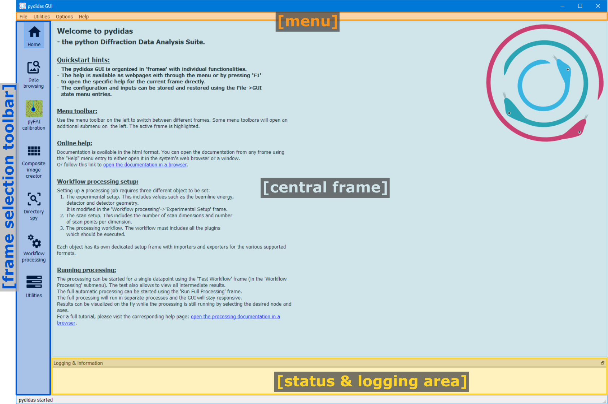

Graphical user interface#
The graphical user interface is organized in Frames which are independent of each other and which each hold persistent information during each session.
The individual Frames and Windows are presented below before Recipes are described which give a detailed guide on individual use cases.
Overview#
The general pydidas GUI layout is shown below:
{kind=link}
- The menu
The menu bar allows access to global functionality like state import and export, global and user settings as well as help and bug reporting. The details are described in the Menu manual.
- The status & logging area
This dockable area is used by all frames to send status updates and to display them globally.
- The Frame selection toolbar
This toolbar is used to select which frame to display in the central widget of the GUI. Some entries can open a submenu with additional choices. Clicking on the icon will open the frame. Frames are persistent within a session and information is stored when switching between different frames.
- The central frame
This widget displays the active frame and the main interaction with the user happens here.
After starting the GUI, the home frame gives links to the documentation and a very brief reminder how to user the pydidas GUI.
The UI state#
The state of the interface, including all configurations of frames and apps, can be stored and restored by the user. This is handled in the File > GUI state menu and details are explained in detail Menu manual.
This function allows to either store the state in a automatically controlled file in the OS-specific user’s application config directory or in a file specified by the user itself. For restoring, similar options exist. In addition, pydidas stores the GUI’s state when closing the GUI properly (i.e. a regular exit), allowing the user to pick up where they left.
Note
The automatically-controlled files are user-specific and if users log in on the same machine using a different user account, the file will not be accessible.
Generic GUI information#
Frames#
Detailed descriptions of the individual frames are given here.
Windows#
Detailed information about the individual windows is given here.